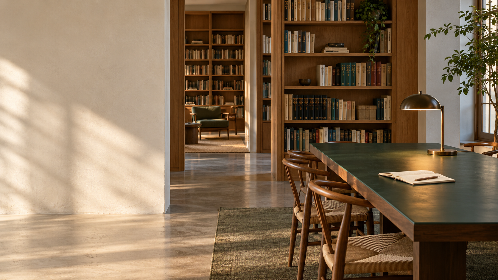

01 / An analytical brief: make observations easy to inspect LEARNING SPACES / OBSERVATIONSThe learning room  01 / FURNITUREA shared table02 / MATERIALBooks within reach03 / LIGHTDaylight from the side Visible features in a generated fictional room. No measured learning outcome is claimed.
02 / An editorial brief: establish a place and a proposition FIELD NOTES / LEARNING SPACESRoom forattention. A shared table. Books within reach.Daylight from the side.Fictional room study / An editorial proposition
03 / A human-scale brief: soften cadence without losing structure Field notes / Learning spacesRoom forattention. A shared table, books within reach,and daylight from the side. 01 / The shared tableFictional room study